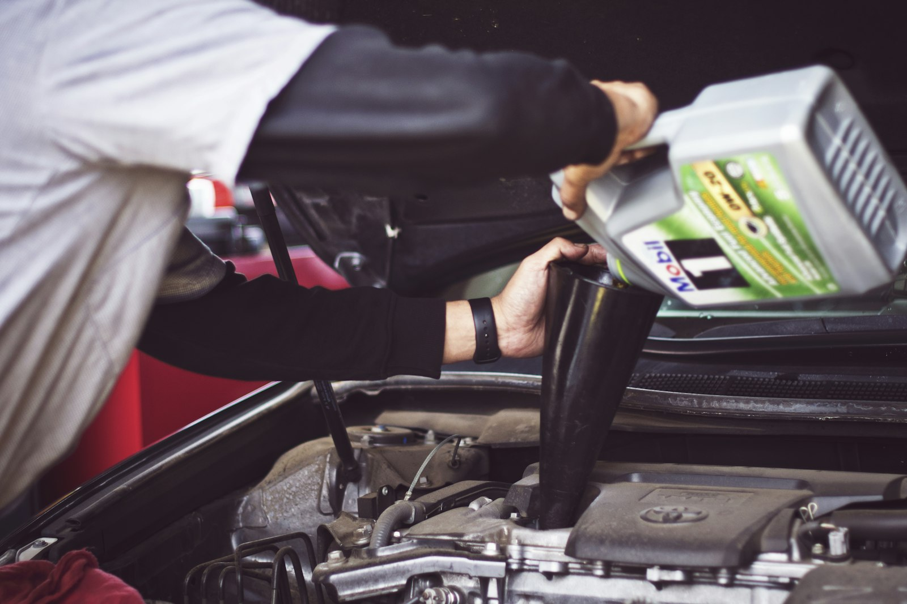
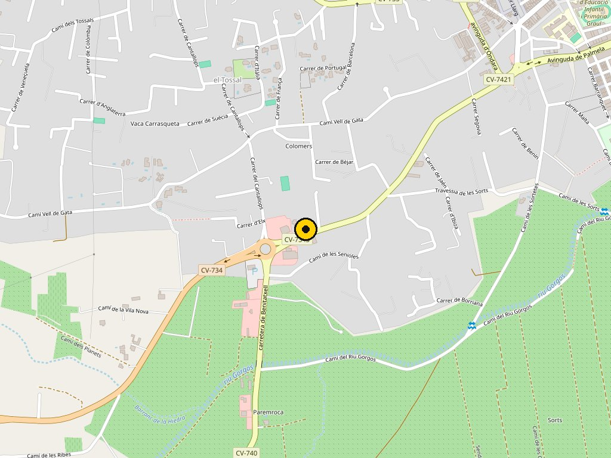
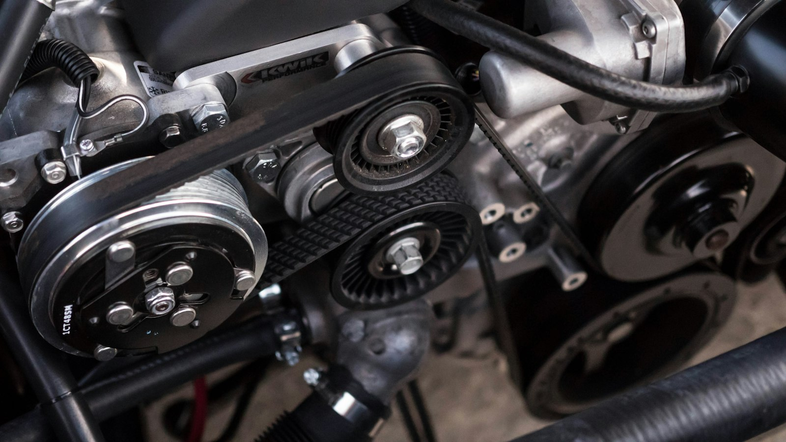

Mecánica
Mechanics
Citado en el directorio municipal y en el de comercios de la Comunitat Valenciana.
Listed on the municipal directory and the Comunitat Valenciana business directory.
Demo no oficial hecha por Sky. No es el sitio oficial de Talleres Palacio. Unofficial demo made by Sky. This is not the official Talleres Palacio website.
Taller mecánico · Xàbia
Taller de vehículos en la Av. de Gata, 46. Esta página es una demo para mostrar cómo podría verse una web sencilla del taller. No es el sitio oficial.
A vehicle workshop at Av. de Gata, 46. This page is a demo of how a simple site for the workshop could look. It is not the official website.

Foto de stock, no del taller
Stock photo, not from the workshop
01 / Oficio
Lista tomada de fichas públicas. Los precios y cualquier servicio extra son placeholders hasta confirmarlos con el taller.
This list comes from public listings. Prices and any extra services are placeholders until the workshop confirms them.
Citado en el directorio municipal y en el de comercios de la Comunitat Valenciana.
Listed on the municipal directory and the Comunitat Valenciana business directory.
Citado en el directorio municipal y en el de comercios de la Comunitat Valenciana.
Listed on the municipal directory and the Comunitat Valenciana business directory.
Citado en el directorio municipal y en el de comercios de la Comunitat Valenciana.
Listed on the municipal directory and the Comunitat Valenciana business directory.
Citado en el directorio municipal y en el de comercios de la Comunitat Valenciana.
Listed on the municipal directory and the Comunitat Valenciana business directory.
Aparecen en la ficha de Comercios Comunitat Valenciana; conviene confirmarlos con el taller.
These appear on the Comunitat Valenciana business listing; they should be confirmed with the workshop.
Espacio para otros servicios que el taller quiera incluir.
Space for any other services the workshop wants to include.
Esa misma ficha describe el negocio como taller multimarca y dice que trabaja con aseguradoras. Los detalles se confirmarán con ellos.
That same listing describes the business as a multi-brand workshop and says it works with insurers. The details will be confirmed with them.
02 / Grúa
El directorio municipal de Xàbia indica que Talleres Palacio ofrece servicio de grúa. Una ficha municipal menciona un servicio 24 horas, pero los números de móvil que publican distintas fichas no coinciden, así que el teléfono de la grúa no está confirmado aquí.
Xàbia’s municipal directory says Talleres Palacio offers a tow service. One municipal listing mentions a 24-hour service, but the mobile numbers published in different listings do not agree, so the tow number is not confirmed here.
Para un aviso, el teléfono fijo que aparece de forma coincidente en las fichas públicas es +34 965 79 39 85. El horario concreto del servicio de grúa se confirmará con el taller.
For now, the landline that matches across public listings is +34 965 79 39 85. The exact hours of the tow service will be confirmed with the workshop.
03 / Turno
El horario concreto no está confirmado aquí. Conviene preguntarlo por teléfono.
Specific opening hours are not confirmed here. Please check by phone.
04 / Ubicación

El marcador es aproximado, en la zona de la Av. de Gata en Xàbia. OpenStreetMap no tiene una entrada del taller levantada, ni usa ese nombre de calle en este tramo (aparece como CV-7343, en el Tossal). Ver mapa más grande.
The pin is approximate, in the Av. de Gata area of Xàbia. OpenStreetMap has no surveyed workshop entrance, and does not use that street name on this stretch (it is tagged CV-7343, in el Tossal). View a larger map.
